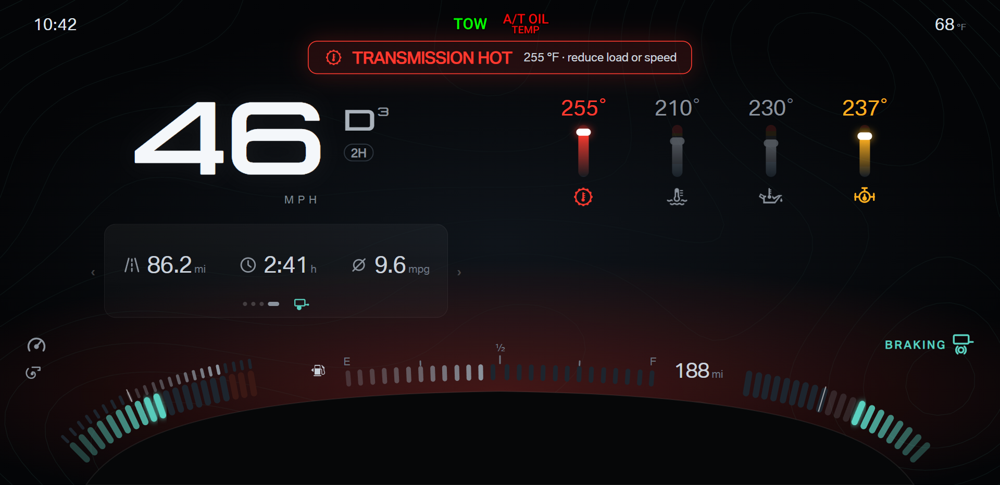
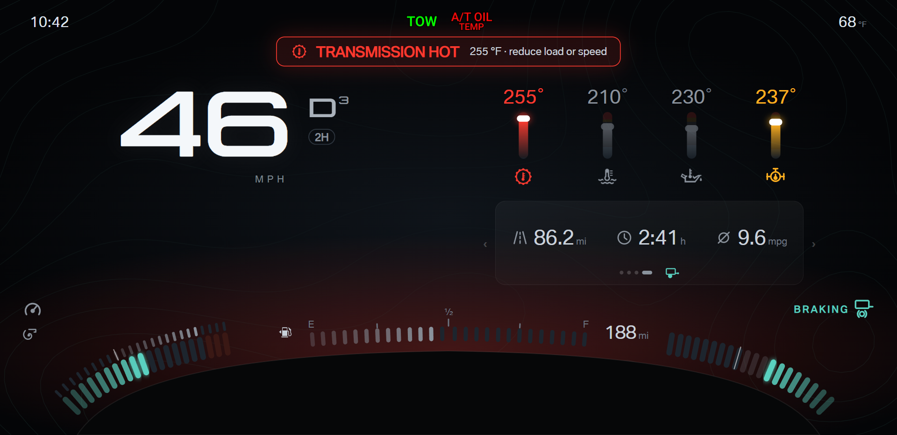

F150 cluster · Design round 17 · Towing A: primary fixed, secondary paged
Towing A from round 10 is locked. Round 17 splits the readings in two tiers. Pick A or B.
- Primary, always on screen: speed, gear, the four temperature bars, both corner bands, and the fuel line.
- Secondary, one page at a time in a paged panel: trailer, tires, engine, trip. The steering wheel left / right keys change the page.
Each page holds three values at most.
- Conditions from round 15 still apply. A low tire jumps the panel to tires, live trailer braking to trailer,
and a climb or descent to engine. A temperature condition shows every temperature value in place, because the temperatures are always on screen.
- A page off screen that needs attention shows the page symbol beside the page dots in the state colour.
- The gear is a secondary reading now: grey and 60 px (was white and 120 px).
- A · Panel under the speed (x 200 to 860). B · Panel under the temperatures (x 1060 to 1720).
A · Panel under the speed
braking and transmission hot, driver on the trip page

B · Panel under the temperatures
braking and transmission hot, driver on the trip page
